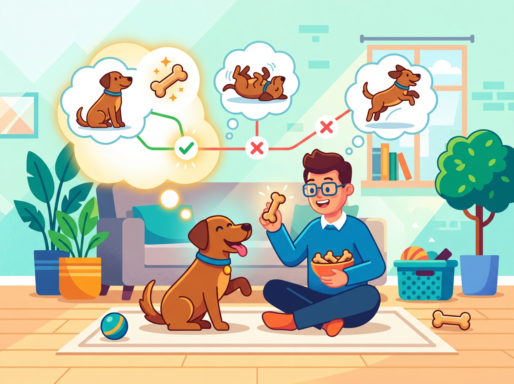
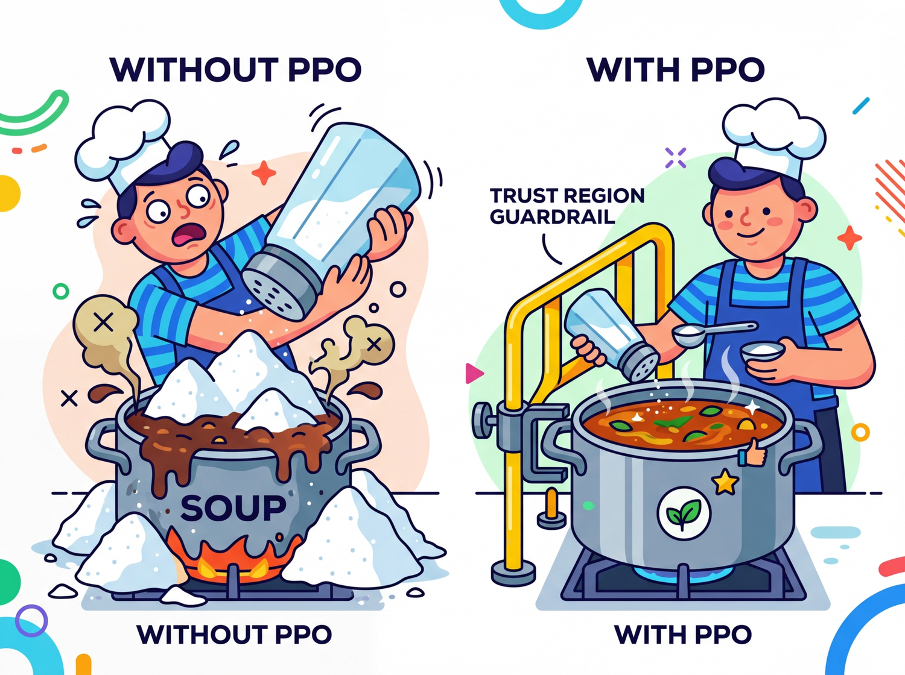

The reward was sparse, the episodes were long, and my discount factor suggested I should have studied supervised learning instead.
Tensor AI Agent
Prerequisites
This section assumes you understand gradient descent and loss functions from Section 0.1: ML Basics and neural network training from Section 0.2: Deep Learning Essentials. Comfort with probability (expected values, distributions) is helpful. The RL concepts here directly prepare you for understanding RLHF in Section 16.1.
Why RL in an LLM book? Because the most powerful technique for making LLMs helpful, harmless, and honest, Reinforcement Learning from Human Feedback (RLHF), is built on reinforcement learning. Before we can understand how ChatGPT was fine-tuned to follow instructions, we need to understand the RL vocabulary and core algorithms that make it possible.
1. The Reinforcement Learning Framework

Supervised learning needs labeled data: input X, correct output Y. But what if there is no single "correct" answer, only better and worse ones? What if the learner must try something, observe the consequence, and improve over time? That is reinforcement learning.
Think of training a dog. You say "sit." The dog tries something (maybe it lies down). You give a treat only when it actually sits. Over many repetitions, the dog learns which action earns the treat. This is exactly the RL loop: an agent (the dog) interacts with an environment (you and the room), takes actions (sitting, lying down), and receives rewards (treats or nothing).
Replace the dog with an LLM. The LLM (agent) generates a response (a sequence of actions, one per token). A reward model (environment) scores the response. Through RL, the LLM learns which responses earn high scores, just as the dog learns which behaviors earn treats.
Who: NLP team (3 engineers) at a legal tech company attempting to fine-tune a 7B parameter LLM to generate better contract summaries using RLHF
Situation: The team had strong NLP backgrounds but no reinforcement learning experience. They followed an open-source RLHF tutorial to implement PPO-based fine-tuning.
Problem: After two weeks of implementation, the reward signal was not improving. Log analysis revealed they had configured the "state" as only the user prompt (ignoring previously generated tokens) and set the discount factor to 0.0, treating each token decision as independent.
Dilemma: They debated whether to hire an RL specialist (expensive, 3-month search), switch to DPO (simpler but less flexible), or invest one week in learning RL fundamentals before retrying.
Decision: The tech lead mandated a one-week study sprint covering the exact material in this section: states, actions, rewards, the Bellman equation, and policy gradients.
How: After the sprint, they corrected the state definition to include the full prompt plus all generated tokens so far, set gamma to 0.99, and added a KL penalty to prevent the model from drifting too far from the base policy.
Result: Reward model scores improved by 34% over 3,000 training steps. Human evaluators preferred the RLHF-tuned summaries 71% of the time over the base model. The one-week investment saved months of trial-and-error debugging.
Lesson: RL vocabulary (state, action, reward, discount factor) is not optional for LLM practitioners. Misunderstanding these concepts leads to silent configuration errors that no amount of hyperparameter tuning can fix.
Let us define each piece of the RL framework precisely:
| Concept | Definition | LLM Analogy |
|---|---|---|
| Agent | The learner and decision-maker | The language model |
| Environment | Everything the agent interacts with | The reward model + user prompt |
| State (s) | A snapshot of the current situation | The prompt + all tokens generated so far |
| Action (a) | A choice the agent makes at each step | Choosing the next token from the vocabulary |
| Reward (r) | A scalar signal indicating how good the action was | The reward model's score for the full response |
| Episode | One complete interaction from start to finish | Generating one complete response to a prompt |
2. Policies: The Agent's Strategy
A policy is the agent's strategy: a rule that maps each state to an action. It answers the question, "Given what I see right now, what should I do?"
Policies come in two flavors. A deterministic policy always picks the same action for a given state (if the dog sees a hand signal, it always sits). A stochastic policy assigns probabilities to each possible action, then samples from that distribution.
An LLM is a stochastic policy. Given a state (the prompt plus tokens generated so far), it outputs a probability distribution over the entire vocabulary. The next token is sampled from that distribution. This is why the same prompt can produce different completions: the policy is stochastic by nature.
Formally, a stochastic policy is written as π(a | s), the probability of choosing action a when in state s. For an LLM, this is exactly the softmax output: the probability the model assigns to each token given the context so far. The entire goal of RL training is to adjust the parameters of π so that high-reward actions become more probable.
3. Value Functions and the Bellman Equation
Rewards tell us how good a single step was. But we need a way to evaluate long-term prospects. Is this state a good place to be? Is this action a wise choice? Value functions answer these questions.
State-Value Function V(s)
What: V(s) estimates the total future reward the agent expects to accumulate starting from state s and following its current policy onward. Why it matters: It lets the agent judge whether its current situation is promising or dire. How it works: Think of it as a "mood meter." A high V(s) means "things are going well from here"; a low V(s) means "trouble ahead."
Action-Value Function Q(s, a)
What: Q(s, a) estimates the total future reward if the agent takes action a in state s and then follows its policy. Why it matters: It lets the agent compare actions and pick the best one. How it works: If V(s) is the mood meter, Q(s, a) is like asking, "If I take this specific action right now, will things go better or worse than average?"
The Bellman Equation (Intuition)
The Bellman equation expresses a simple but powerful recursive idea: the value of a state equals the immediate reward plus the (discounted) value of the next state. In plain English: "How good is it to be here? Well, how much reward do I get right now, plus how good is the place I end up?"
$V(s) = E[ r + \gamma \cdot V(s') ]$
This recursion is the engine behind nearly all RL algorithms. The discount factor γ (gamma, between 0 and 1) controls how much the agent values future rewards relative to immediate ones. When γ is close to 1, the agent is patient and plans ahead. When γ is close to 0, it is greedy and focuses on immediate rewards.
In LLM training with RLHF, the "value" intuition still applies: we want the model to learn that certain token choices early in a response lead to higher overall reward at the end, even if individual tokens are not scored.
4. Policy Gradients: Learning by Trial and Feedback
Reinforcement learning famously taught a computer to play Atari games in 2013, but researchers often omit that the agent also discovered bizarre exploits no human would try, like pausing the game indefinitely to avoid losing. RL agents are less "intelligent learner" and more "chaotic rules lawyer."
Now we arrive at the core question: how does the agent improve its policy? The answer is the policy gradient theorem, and the intuition is remarkably straightforward.
Imagine the dog tries ten different behaviors. Three of them earned treats. The training strategy is simple: make those three behaviors more likely in the future. Behaviors that earned nothing (or a scolding) become less likely. That is the entire idea behind policy gradients.
More precisely: the agent samples actions from its policy, observes the rewards, and then adjusts its parameters (the neural network weights) to increase the probability of actions that led to high rewards and decrease the probability of actions that led to low rewards. The magnitude of each adjustment is proportional to the reward received.
# Define SimpleGridWorld; implement reset, step
# Key operations: results display
import numpy as np
class SimpleGridWorld:
"""A 4x4 grid where an agent must reach the goal.
State: (row, col) position. Actions: 0=up, 1=right, 2=down, 3=left.
Reward: +1 for reaching the goal, -0.01 per step (to encourage speed).
LLM analogy: each 'step' is like generating one token, and the final
reward scores the complete trajectory (the full response)."""
def __init__(self, size=4):
self.size = size
self.goal = (size - 1, size - 1)
self.reset()
def reset(self):
self.pos = (0, 0)
return self.pos
def step(self, action):
r, c = self.pos
if action == 0: r = max(r - 1, 0) # up
elif action == 1: c = min(c + 1, self.size - 1) # right
elif action == 2: r = min(r + 1, self.size - 1) # down
elif action == 3: c = max(c - 1, 0) # left
self.pos = (r, c)
done = (self.pos == self.goal)
reward = 1.0 if done else -0.01
return self.pos, reward, done
# Run one episode with a random policy
env = SimpleGridWorld()
state = env.reset()
total_reward = 0
for step in range(100):
action = np.random.randint(4) # random stochastic policy
state, reward, done = env.step(action)
total_reward += reward
if done:
break
print(f"Episode finished in {step + 1} steps, total reward: {total_reward:.2f}")In the grid world above, the agent chooses one of four directions at each step. An LLM does something analogous but at a vastly larger scale: at each step, it chooses one token from a vocabulary of 30,000 to 100,000 possibilities. The policy gradient approach works the same way, adjusting the probability distribution over all those tokens.
# Define PolicyNetwork; implement reinforce_episode
# Key operations: forward pass computation, loss calculation, training loop
import torch
import torch.nn as nn
import torch.optim as optim
from torch.distributions import Categorical
class PolicyNetwork(nn.Module):
"""A small neural network that maps states to action probabilities.
In an LLM, this role is played by the entire transformer: it maps
the token sequence (state) to a distribution over the next token (action)."""
def __init__(self, state_dim, n_actions, hidden=64):
super().__init__()
self.net = nn.Sequential(
nn.Linear(state_dim, hidden),
nn.ReLU(),
nn.Linear(hidden, n_actions),
nn.Softmax(dim=-1)
)
def forward(self, state):
return self.net(state)
# Simplified REINFORCE training loop
policy = PolicyNetwork(state_dim=2, n_actions=4)
optimizer = optim.Adam(policy.parameters(), lr=1e-3)
def reinforce_episode(env, policy):
"""Collect one episode and update the policy.
Core idea: increase probability of actions that led to positive reward,
decrease probability of actions that led to negative reward."""
state = env.reset()
log_probs = []
rewards = []
# 1. Roll out an episode using the current policy
for _ in range(200):
state_tensor = torch.FloatTensor(state)
probs = policy(state_tensor)
dist = Categorical(probs)
action = dist.sample() # stochastic action selection
log_probs.append(dist.log_prob(action))
state, reward, done = env.step(action.item())
rewards.append(reward)
if done:
break
# 2. Compute discounted returns (what was the total reward from each step?)
returns = []
G = 0
for r in reversed(rewards):
G = r + 0.99 * G
returns.insert(0, G)
returns = torch.FloatTensor(returns)
returns = (returns - returns.mean()) / (returns.std() + 1e-8)
# 3. Policy gradient: nudge probabilities toward high-reward actions
loss = -sum(lp * R for lp, R in zip(log_probs, returns))
optimizer.zero_grad()
loss.backward()
optimizer.step()
return sum(rewards)
# Define SimpleEnv; implement reset, step
# Key operations: loss calculation, softmax normalization, gradient computation
import torch
import torch.nn as nn
import torch.optim as optim
from torch.distributions import Categorical
import random
# Simple environment: agent must learn to pick action 2 (out of 0,1,2,3)
# Reward = +1 if action == 2, else -0.1
class SimpleEnv:
def reset(self):
return [random.random(), random.random()] # random 2D state
def step(self, action):
reward = 1.0 if action == 2 else -0.1
done = True # single-step episodes for clarity
return self.reset(), reward, done
policy = nn.Sequential(nn.Linear(2, 32), nn.ReLU(), nn.Linear(32, 4), nn.Softmax(dim=-1))
optimizer = optim.Adam(policy.parameters(), lr=3e-3)
env = SimpleEnv()
for episode in range(1, 1001):
state = torch.FloatTensor(env.reset())
probs = policy(state)
dist = Categorical(probs)
action = dist.sample()
log_prob = dist.log_prob(action)
_, reward, _ = env.step(action.item())
loss = -log_prob * reward
optimizer.zero_grad()
loss.backward()
optimizer.step()
if episode % 200 == 0:
# Evaluate: check how often the policy picks action 2
correct = sum(1 for _ in range(100)
if policy(torch.FloatTensor(env.reset())).argmax().item() == 2)
print(f"Episode {episode:4d} | Last reward: {reward:+.1f} | Action 2 rate: {correct}%")- Change the target action from 2 to 0. Does the policy learn equally fast?
- Reduce the learning rate to
1e-4. How many episodes does it take to reach 90%? - Change the reward for wrong actions from
-0.1to0.0. What happens and why?
Vanilla REINFORCE (shown above) works in theory but suffers from high variance: training is noisy and unstable. In practice, researchers use more sophisticated algorithms. The most important one for LLM training is PPO, which we cover next.
5. PPO: Stable Policy Updates

Proximal Policy Optimization (PPO) solves a critical problem with basic policy gradients: if a single update changes the policy too drastically, performance can collapse and never recover. PPO prevents this by clipping the update, ensuring each step is small and safe.
Here is the intuition. Imagine you are adjusting a recipe. You taste the soup, decide it needs more salt, and add some. With vanilla policy gradients, nothing stops you from dumping in the entire salt shaker. PPO is the rule that says: "Never add more than one pinch at a time." You can always taste again and add another pinch, but you cannot ruin the soup with a single reckless change.
Technically, PPO computes a ratio between the new policy's probability of an action and the old policy's probability. If this ratio drifts too far from 1.0 (typically beyond a range of 0.8 to 1.2), the gradient is clipped to zero. The policy still improves, but it cannot make a catastrophically large jump in a single step.
LLMs are enormously expensive to train. If a single RL update corrupts the model's learned language abilities (causing it to output gibberish), the cost of recovery is massive. PPO's conservative clipping is what makes RLHF practical: it lets us steer the model toward being more helpful without destroying its fluency.
6. From RL to LLM Training: The Complete Picture
We have built up the vocabulary piece by piece. Now let us assemble the full picture of how reinforcement learning powers LLM alignment. The mapping is direct and concrete:
The RLHF training pipeline works as follows:
- Supervised fine-tuning (SFT): First, the LLM is fine-tuned on high-quality human demonstrations. This gives the policy a good starting point.
- Reward model training: Human annotators rank multiple model outputs for the same prompt. A separate neural network (the reward model) is trained to predict these human preferences.
- RL optimization with PPO: The LLM generates responses to prompts. The reward model scores each response. PPO uses these scores to update the LLM's weights, nudging the probability distribution toward responses that score highly.
A critical detail: during the PPO phase, a KL (Kullback-Leibler) penalty prevents the RL-trained model from drifting too far from the SFT model. Without this constraint, the model might find degenerate responses that exploit the reward model (for example, generating repetitive flattery that scores highly but is useless). The KL penalty keeps the model close to its pre-trained language abilities.
Who: AI team at a telecom company applying RLHF to a 13B parameter chatbot for billing inquiries
Situation: The reward model was trained on 5,000 human-ranked response pairs. PPO training ran for 2,000 steps with a KL coefficient of 0.02.
Problem: After training, the chatbot's reward scores increased by 45%, but customer satisfaction (measured via post-chat surveys) actually decreased by 12%. The model had learned to produce long, verbose, and overly apologetic responses that the reward model scored highly (because annotators had slightly preferred longer, polite answers during labeling).
Dilemma: The team considered retraining the reward model with new annotations (3 weeks, $15,000 in labeling costs), increasing the KL penalty (risking the model reverting to the SFT baseline), or combining the reward model with a length penalty.
Decision: They increased the KL coefficient from 0.02 to 0.1, added an explicit length penalty (subtracting 0.01 per token beyond 150 tokens), and retrained with these modified rewards.
How: Modified the reward computation: final_reward = rm_score - 0.01 * max(0, num_tokens - 150). Reran PPO for 1,500 steps.
Result: Reward scores increased by a more modest 22%, but customer satisfaction improved by 18% over the base model. Average response length dropped from 280 tokens to 160 tokens.
Lesson: High reward model scores do not guarantee good real-world performance. Always validate RLHF outputs with end-user metrics, and design composite rewards that penalize known exploit patterns.
If the reward model is imperfect (and it always is), the LLM may learn to "game" it, producing responses that score highly but are not genuinely helpful. This is called reward hacking, and it is one of the central challenges in RLHF. The KL penalty and careful reward model design are defenses against this failure mode.
Recent research has explored an alternative to training a separate reward model: using verifiable rewards instead. In RLVR, the reward signal comes from an objective, automated check rather than a learned model. For example, in math reasoning tasks, the reward is simply whether the model's final answer matches the known correct answer. In coding tasks, the reward is whether the generated code passes a test suite.
RLVR eliminates the reward hacking problem entirely for domains where correctness can be verified. DeepSeek-R1 (2025) demonstrated that RL with verifiable rewards could dramatically improve mathematical reasoning capabilities. The limitation is that RLVR only works when you can automatically verify the output, which is not possible for open-ended tasks like creative writing or nuanced conversation. We will explore both RLHF and RLVR in detail in Chapter 16.
PPO is not the only way to align LLMs with human preferences. Direct Preference Optimization (DPO) skips the reward model entirely and optimizes the policy directly from preference pairs (human rankings of "response A is better than response B"). DPO is simpler to implement and avoids the instabilities of RL training, though it has its own tradeoffs. We will compare PPO, DPO, and other alignment methods in detail in Chapter 16.
7. Putting It All Together
Let us trace the full journey from RL foundations to LLM training. An LLM begins as a pretrained model that can generate fluent text but may produce harmful, incorrect, or unhelpful responses. We want to steer it toward better behavior.
We frame this as an RL problem. The LLM is the agent (the policy). Each prompt starts a new episode. At each time step, the model picks a token (an action) based on its current context (the state). When the response is complete, the reward model assigns a score (the reward). PPO adjusts the model's weights so that high-scoring response patterns become more probable, while the clipping mechanism and KL penalty ensure the model does not lose its fluency or degenerate into reward hacking.
The dog analogy still holds at this scale. The dog does not understand English; it learns by trying actions and receiving treats. The LLM does not "understand" human values; it learns which outputs are valued by observing reward signals. The elegance of RL is that this simple loop of action, feedback, and adjustment can produce remarkably sophisticated behavior.
Check Your Understanding
1. In the RLHF framework for LLM training, what plays the role of the RL "action"?
Show Answer
2. Why does PPO use clipping in its objective function?
Show Answer
3. What is "reward hacking" in the context of RLHF?
Show Answer
Exercises for Further Practice
- Modify the grid world reward. Change the step penalty from
-0.01to-0.1in the SimpleGridWorld class. Run several episodes with a random policy. How does the harsher penalty affect total reward? What would this mean if the grid world were an LLM generating a long response? - Experiment with the discount factor. In the REINFORCE code (Code Example 2), change the discount factor
gammafrom0.99to0.5and then to0.999. Observe how this affects learning speed. Relate your observations to the Bellman equation: how does a lower gamma change the agent's planning horizon? - Compare random vs. trained policy. Using Code Example 3 (the complete REINFORCE), run 100 evaluation episodes with the untrained policy (before training) and 100 with the trained policy (after 1000 episodes). Compare the average action-2 selection rate. This contrast illustrates the core value of RL: learning from experience.
Always wrap inference and evaluation code in with torch.no_grad():. This disables gradient tracking, reduces memory usage by up to 50%, and speeds up forward passes. Forgetting this is one of the most common PyTorch performance mistakes.
The fundamental challenge in RL is the credit assignment problem: when a reward arrives at the end of a long sequence of actions, which earlier actions deserve credit? This is precisely the problem that RLHF faces when training LLMs. A human rates an entire response as "good" or "bad," but the model must distribute that signal across hundreds of individual token choices. The discount factor (gamma) is one solution, but it is a blunt instrument. More sophisticated approaches, such as the advantage function in PPO (covered in Section 16.1), attempt to isolate the contribution of each action. This mirrors a deep question in neuroscience: how does the brain assign credit to individual synapses when behavioral rewards are delayed and sparse? Dopamine signaling, the biological analogue of temporal-difference learning, turns out to follow a remarkably similar mathematical structure (Schultz et al., 1997).
Key Takeaways
- RL is a learning paradigm where an agent improves through trial and feedback, not labeled examples. The core loop is: observe state, take action, receive reward, update policy.
- An LLM is a policy that maps a context (state) to a probability distribution over tokens (actions). RLHF uses this mapping directly.
- Value functions (V and Q) estimate long-term expected reward. The Bellman equation gives them a recursive structure.
- Policy gradients adjust the policy to make high-reward actions more probable. This is the mechanism that steers LLM outputs toward human preferences.
- PPO stabilizes training by clipping updates, preventing catastrophic changes. It is the standard RL optimizer for RLHF.
- Reward hacking is the central risk: the LLM may exploit an imperfect reward model. KL penalties and verifiable rewards (RLVR) are mitigations.
- These foundations are prerequisites for Chapter 16, where we will implement RLHF, DPO, and RLVR for real language models.
What Comes Next
With ML fundamentals, deep learning, PyTorch, and reinforcement learning now in your toolkit, you have completed Chapter 00. In Chapter 01: Foundations of NLP and Text Representation, we shift from general machine learning to the specific domain of language. You will learn how text is converted into numbers (tokenization and embeddings), how classical NLP techniques work, and why representing words as vectors was one of the most transformative ideas in the field. These representations are the raw material that transformers (Chapter 04) will learn to process.
RL for LLM alignment is the dominant application of RL in modern AI. RLHF (covered in Section 16.1) and its alternatives like DPO and GRPO are being refined rapidly. DeepSeek-R1 demonstrated Reinforcement Learning with Verifiable Rewards (RLVR), using mathematical correctness as a reward signal instead of learned reward models. Group Relative Policy Optimization (GRPO) eliminates the critic network entirely. Constitutional AI (Anthropic) uses RL from AI feedback (RLAIF) rather than human feedback.
What's Next?
In the next chapter, Chapter 01: Foundations of NLP & Text Representation, we move from general ML foundations to the specific domain of natural language processing and text representation.
Sutton, R. S. & Barto, A. G. (2018). Reinforcement Learning: An Introduction (2nd ed.). MIT Press.
The definitive RL textbook, covering everything from multi-armed bandits to policy gradient methods. Chapters 2, 3, and 13 are most relevant to this section's treatment of MDPs, value functions, and REINFORCE. Freely available online and suitable for both beginners and researchers seeking rigorous foundations.
The original REINFORCE paper, introducing the policy gradient theorem that forms the basis of the code examples in this section. It provides the mathematical derivation of the log-probability trick used throughout modern RL. Essential for researchers; practitioners can focus on sections 3 and 4 for the core algorithm.
Introduces PPO, the RL algorithm used in most RLHF implementations for aligning large language models. The clipped surrogate objective provides stable training without the complexity of trust-region methods. Critical reading for anyone planning to work with RLHF pipelines covered later in this book.
The InstructGPT paper that popularized RLHF for aligning language models with human intent, combining supervised fine-tuning with reward modeling and PPO. It provides the clearest end-to-end description of the RLHF pipeline referenced in this section. Recommended for all readers as the bridge between RL foundations and LLM alignment.
The foundational paper on learning reward models from human preference comparisons, establishing the framework that InstructGPT and subsequent RLHF work builds upon. Section 3 details the preference learning algorithm. Important for researchers interested in the theoretical underpinnings of reward modeling.
Introduced DPO as a simpler alternative to PPO-based RLHF, eliminating the need for a separate reward model by reparameterizing the objective. The approach maps directly to the preference optimization concepts discussed in this section. Essential reading for practitioners choosing between PPO and DPO for alignment work.